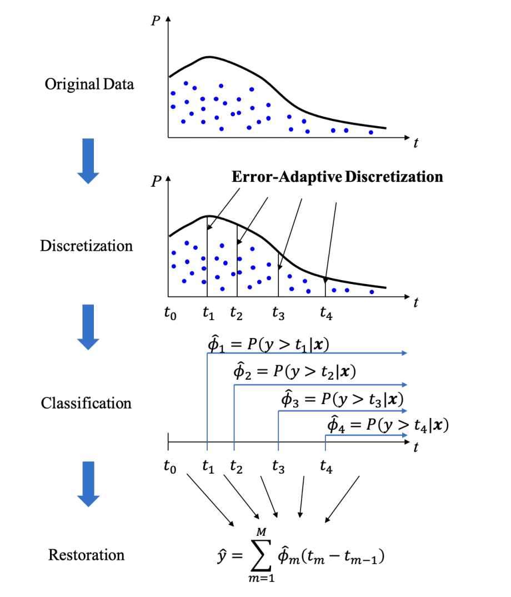
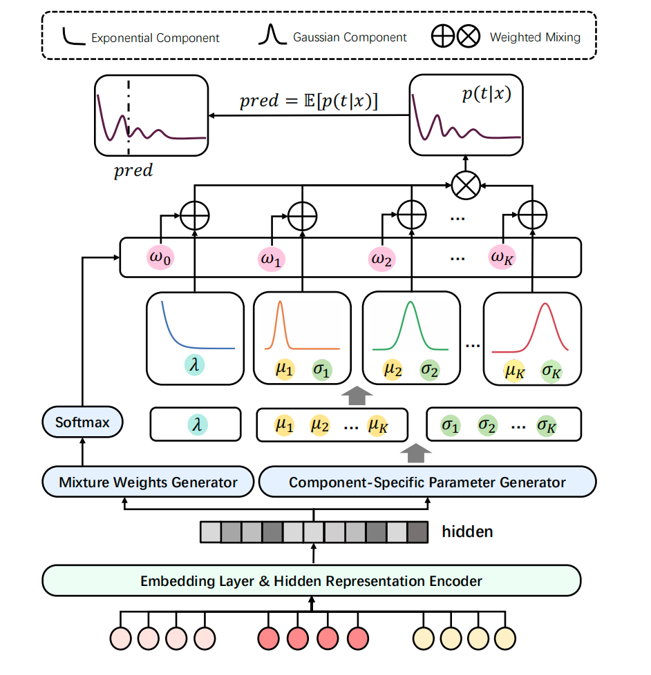
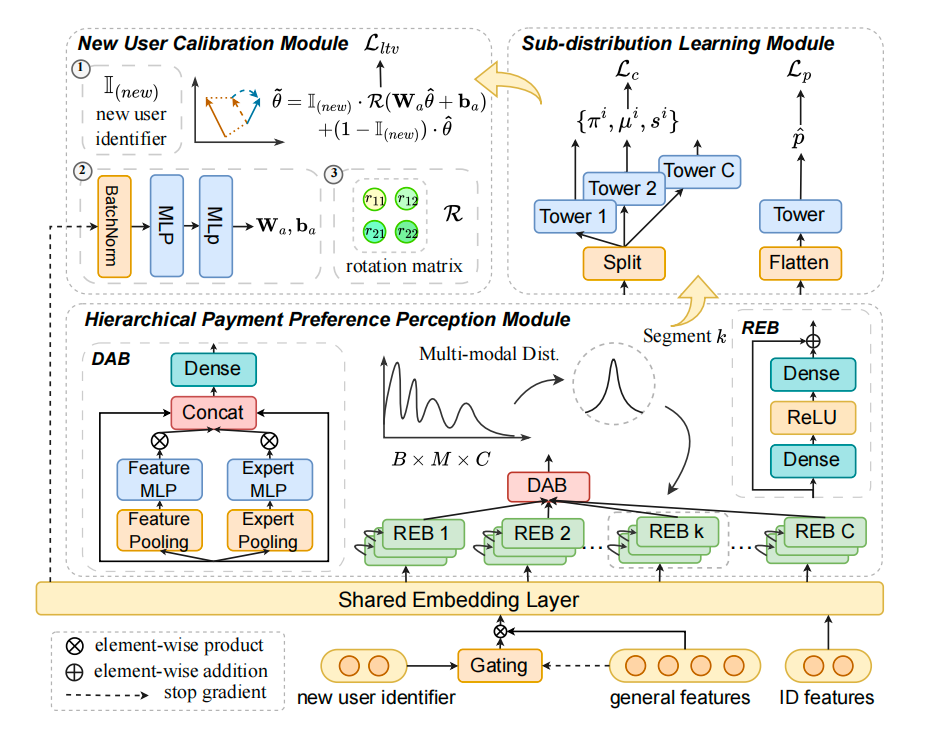

回归预测调研报告
LTV与视频观看时长预测的标签处理、损失函数与核心建模框架
📑 页面目录
1. 核心关键词
- LTV (Lifetime Value): 用户生命周期价值预测，具有极高的稀疏性与长尾特征（少数高价值"大鲸鱼"用户贡献主要营收）。
- Video Watch Time: 视频观看时长预测，受用户兴趣与"快划"行为双重影响，分布呈现多峰性与零点聚集特性。
2. 常用基础方法综述
2.1 标签变换与平滑 (Label Processing)
- Log 变换 / Box-Cox 变换： 压缩目标值的动态范围，缓解极端值对 Loss 的支配，使分布更接近正态分布。
- LDS (Label Distribution Smoothing): 针对连续标签的频率不均，利用核密度估计 (KDE) 平滑分布特征，通过重加权解决长尾区域样本稀疏导致的学习偏置。
2.2 损失函数 (Loss Functions)
- MAE (L1 Loss): 对异常值更稳健，但在零点不可导。
- Huber Loss: 结合 L1 和 L2 的优点，误差小时使用平方损失保证收敛，误差大时使用线性损失降低异常值敏感度。
- Pinball Loss: 分位数回归的核心损失，用于预测分位点区间，适合处理 LTV 这种高度不确定性的场景。
3. 核心建模方式
3.1 分桶 + 有序回归（以快手 CREAD 为例）
- 问题背景： 观看时长分布极不平衡。直接回归由于长尾样本稀疏很难训练；简单分桶离散化（Classification）虽稳健，但面临"分桶太细难以学习（学习误差）"与"分桶太粗还原精度丢失（还原误差）"的矛盾。
- 核心思想： 提出"分类-还原"框架，通过 误差自适应离散化 (Error-Adaptive Discretization) 自动搜索最优桶边界，平衡两类误差。
网络架构
- 特征提取层： 融合用户、视频及上下文特征。
- 分类模块 (Classification)： 预测用户行为落入哪个预定义的桶，输出概率分布。
- 还原模块 (Restoration)： 学习从离散桶到连续值的映射，通过回归校准还原具体的物理时长。

Loss 函数
联合优化分类、还原与保序三个任务：
- 总损失： $\mathcal{L} = \mathcal{L}_{cls} + \beta \mathcal{L}_{res} + \gamma \mathcal{L}_{rank}$
- $\mathcal{L}_{cls}$: 交叉熵损失，用于优化分桶准确率。
- $\mathcal{L}_{res}$: Huber Loss。作用于最终还原的连续值，相比 MSE 能更稳健地处理长尾样本的预估偏差。
- $\mathcal{L}_{rank}$: 保序损失 (Ranking Loss)。采用 pairwise margin ranking loss，确保预测值的相对排序与真实值一致：若 $y_i > y_j$，则 $\hat{y}_i > \hat{y}_j$。这对推荐场景至关重要——排序正确比绝对数值准确更重要。
3.2 混合分布建模
假设目标值服从一种或多种混合概率分布，模型输出分布参数而非单点数值，能更好地刻画数据的异质性。
3.2.1 混合分布建模（以小红书 EGMN 为例）
- 问题背景： 观看时长在粗粒度上极度偏斜（快划多），在细粒度上具有多峰性（完播、重复观看等产生的不同峰值）。
- 核心思想： 假设时长服从 指数-高斯混合分布 (EGM)。
- 指数分量： 建模"快速跳过"行为（无记忆性，零点密度最高）。
- 高斯混合分量： 捕捉多样的深度交互兴趣。
网络架构
- 隐含表示编码器： 提取高维特征表示。
- 混合参数生成器： 分支输出指数参数 $\lambda$、高斯均值/方差 $(\mu_k, \sigma_k)$ 及混合权重 $\omega$。

Loss 函数
- $\mathcal{L}_{MLE}$: 极大似然估计，提升观测样本在分布中的概率。
- $\mathcal{L}_{entropy}$: 熵最大化，防止分量坍塌，确保多峰刻画能力。
- $\mathcal{L}_{reg}$: 期望回归损失，确保预测期望值与实际值对齐。
3.2.2 分层多分布建模（以腾讯 HiLTV 为例）
- 问题背景： 游戏 LTV 存在固定充值档位导致的多峰分布，且用户支付意愿与支付量级存在明显的层次差异。
- 核心思想： 采用 分层 (Hierarchical) 建模思路，将预测任务解耦为"是否有意愿 → 价值能级 → 分布参数"。
网络架构
- 支付倾向层 (Propensity)： 二分类识别付费潜力。
- 价值等级层 (Leveling)： 将用户划分为不同的价值桶。
- 参数预测层： 基于混合分布假设，预测每个价值能级下的分布参数。

Loss 函数
- 分类损失： 交叉熵（意愿与等级分类）。
- 负对数似然 (NLL)： 针对付费用户拟合多分布混合概率。
- 对比学习损失： 增强跨场景（Cross-game）特征表达的鲁棒性。
4. 调研总结
三种方法分别从不同角度解决回归预测中的核心难题：CREAD 通过离散化降低学习难度，EGMN 通过混合分布捕捉多峰特征，HiLTV 通过分层建模解耦不同粒度的预测任务。选择哪种方法取决于具体的业务场景和数据特征。
| 维度 | CREAD (快手) | EGMN (小红书) | HiLTV (腾讯) |
|---|---|---|---|
| 技术路线 | 离散化分桶 + 还原回归 | 指数-高斯混合分布 | 分层分类 + 混合分布参数化 |
| 解决痛点 | 分桶带来的离散化误差 | 长尾流失与多峰兴趣解耦 | 充值档位多峰与支付异质性 |
| 关键 Loss | CE + Huber + Ranking Loss | MLE + Entropy Regularization | NLL + Hierarchical Cls |